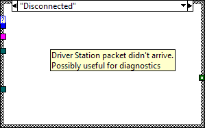
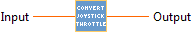
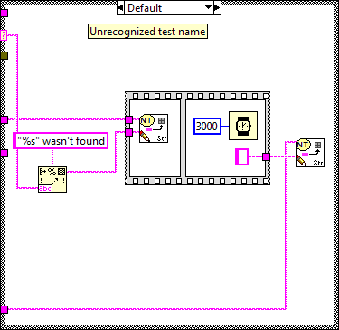
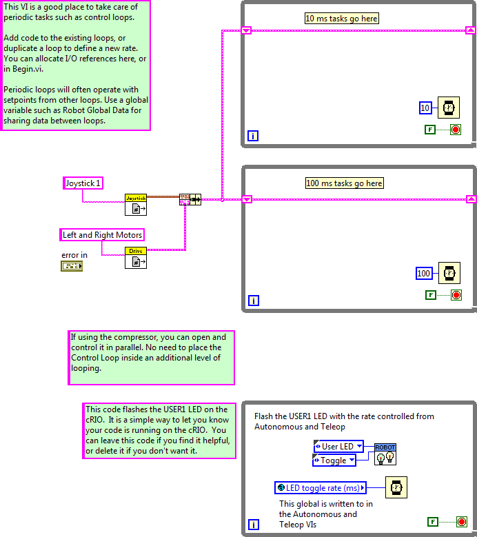
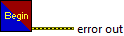
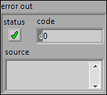
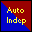

This VI imlements the framework and scheduler for your robotics program. It should not be necessary to modify the framework. You are expected to add your code to the VIs called from Robot Main, the ones located in the Team Code within the project.



This VI is called for each TeleOp packet received from the DS where the robot is not disabled. It is often used to read from the joysticks and update I/O or to update setpoints for timed control loops. It should complete and return within 20 milliseconds or it may miss DS packets.

Sets a reley in three states forwards, reverse and off.
Sets a motor speed in the range [-1,1].

This VI is called each time a disabled packet is received from the DS. It is often used to prepare for the next robot mode, to calibrate sensors, etc.

Converts code to use both the Logitech Extreme 3D Pro Joystick and the Logitech Attack 3 Joystick
Sends values from the joystick to the dashboard.
Sets x and y axis of arcade robot drive.
This global VI can contain as many global variables as you need. Place a control on the panel, give it a good name. To read or write to it from a VI, drag the icon to the diagram of that VI. You can also drag from the project. Click on the node to change which global you access. You shouldn't have multiple locations writing to a global or it will cause a race-condition.

Converts a joystick axis range from [-1,1] to [0,1].


This VI runs in parallel to other tasks. It gets images from the camera, processes them for color or shape and use that information to affect robot behavior.
This VI is called when test mode begins, and will automatically be terminated when it ends. You can add manual or automatic tests and invoke them from the dashboard.



This VI runs in parallel to other tasks. It can contain as many user-defined periodic loops as you need. These can carry out PID or other sorts of timed response.


Called before other user functions, this VI is expected to open initial I/O refnums, load in file data, and do all program initialization. Notice that the error out terminal is simply used for data flow. Wiring it to other structures or subVIs ensures that this VI runs first.



This VI is called just before exiting. It is expected to close I/O refnum, save collected data, etc.

This VI is called when autonomous begins, and will automatically be terminated when autonomous ends. You can carry out timed or sensor driven robot movement independently without needing to return to the caller.
